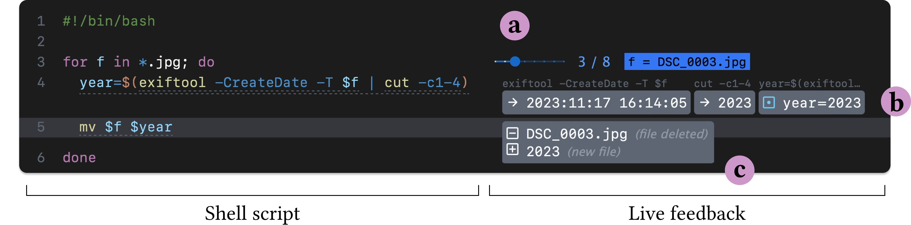

Posted to arXiv: PDF HTML DOI (arXiv) Video Code
Live programming provides visibility to programmers by running and tracing programs as they are edited. However, for programs with potentially harmful side effects, liveness can turn mistakes into disasters. We propose enabling live programming in environments with side effects via sandboxing: confining effects to a simulation of the true environment. We apply sandboxed live programming in the challenging context of shell scripting: a ubiquitous and powerful---yet notoriously opaque and error-prone---tool. ShellVis provides line-by-line feedback on a shell script's run-time behavior, with file operations sandboxed via a safe overlay of the file system. A qualitative user evaluation finds ShellVis to be helpful to participants, replacing tedious existing practices and instilling confidence. Participant responses also reveal areas for future research, particularly bridging the gulf of execution alongside the gulf of evaluation. ShellVis serves as a case study of how sandboxing can bring live-programming techniques into the many real-world programming contexts where side effects are important.